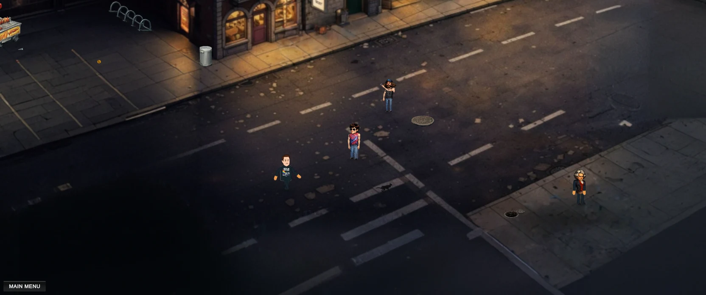

Random events and cutscenes
Build the required random world events and authored cutscenes. Give each one the conditions it needs to happen at the right point in a playthrough.

The priority now is telling Beaver Valley’s story through the systems already in the game. That means building the events and cutscenes it needs, connecting them to Story Mode, and testing how they hold up across a playthrough.
Build the required random world events and authored cutscenes. Give each one the conditions it needs to happen at the right point in a playthrough.
Play through how existing systems affect each other. Check what happens when a player changes plans, interrupts an event, travels, or saves and returns.
Build the locations the story still needs. Complete unfinished areas and revise existing scenes where navigation, staging, or interactions need work.
Playable systems and cutscenes already run in the current build. Progress updates will cover which work is implemented, connected to Story Mode, and tested in a playthrough.
Continue developing both modes and integrate them into the wider Story Mode.
Improve the timing between movement, attacks, blocks, and recovery so fights respond cleanly to player input.
Reduce pauses and missed turns in conversation. Improve how language models interpret orders, choose valid actions, and explain what happened.
Extend the Story timeline to 80 hours. Then build a system that can generate new events and routines from what has happened so the timeline can keep going indefinitely.
Flesh out local multiplayer, including shared events, travel, and party interactions. Add networked multiplayer.
Develop the systems behind zombies, ghosts, and abominations so they can participate in the ongoing world simulation.